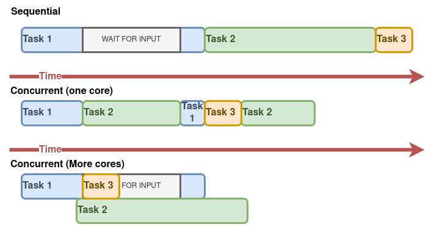
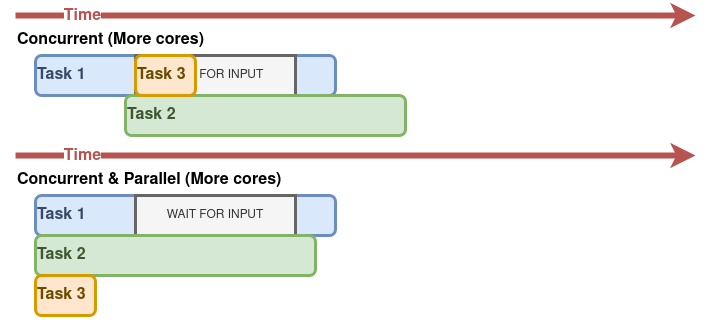
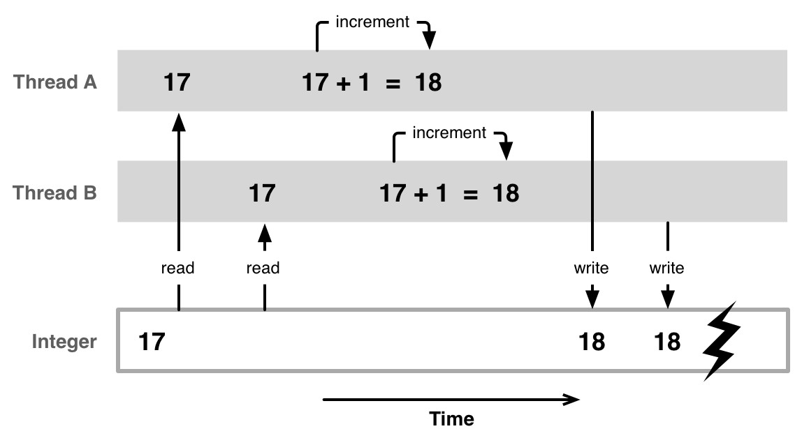
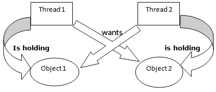

main().

std::thread).int main()main().main().int main() нитmain().main(), завршава се и цео програм, што подразумева прекидање свих нити процеса.main() нит је као и све друге нити.std::threadstd::thread је у стању ‘joinable’ (показује на ток извршавања). Ово значи да је нит кренула да се извршава.join()detach()Terminate called without an active exception. Core dumped.join() или detach()?join() блокира нит позиваоца док се нит на којој је операција join() позвана не заврши.
main() чека резултат рада нити које је створио.detach() раздваја нит позиваоца од нити на којој је операција detach() позвана, тако да нит позивалац не чека да се заврши нит на којој је позвана операција detach().f():
f().f() се занемарује (увек је void).
void ekskluzivnost_primer() {
int brojac = 0;
mutex e;
thread nit1([&brojac, &e]() {
for (int i = 0; i < ITER_NO; i++) {
e.lock(); brojac++; e.unlock();}});
thread nit2([&brojac, &e]() {
for (int i = 0; i < ITER_NO; i++) {
e.lock(); brojac--; e.unlock();}});
nit1.join();
nit2.join();
cout << brojac << endl;
}std::mutexstd::mutex потребно је укључивање заглавља <mutex>.std::mutexlock()unlock()std::mutex у програму.std::mutexstd::mutex је ЗАБРАЊЕНО копирати.std::mutexstd::unique_lockstd::mutex.std::mutex.std::mutex који треба закључати.
unique_lock<mutex> ul(m); за mutex m;std::unique_lockstd::mutex (у деструктору) када објекат класе заврши свој животни век.unlock()), што се може користити ради отпуштања пропуснице ради испуњења услова чекања или повременог отпуштања пропуснице ради спречавања “изгладњивања” нити.std::mutex).void visina() {
int v;
m.lock(); // zakljucavanje propusnice za iostream
// ulazak u KS (pocetak koriscenja resursa - iostream)
cout << "Koliko ste visoki [cm]?" << endl;
cin >> v;
cout << "Vasa visina je " << v << " cm." << endl;
// izlazak iz KS (kraj koriscenja resursa - iostream)
m.unlock(); // oslobadjamo pristup deljenom resursu
}
std::mutex) и